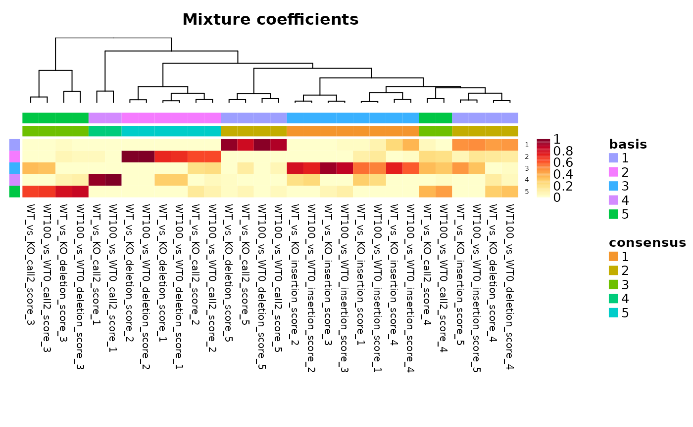
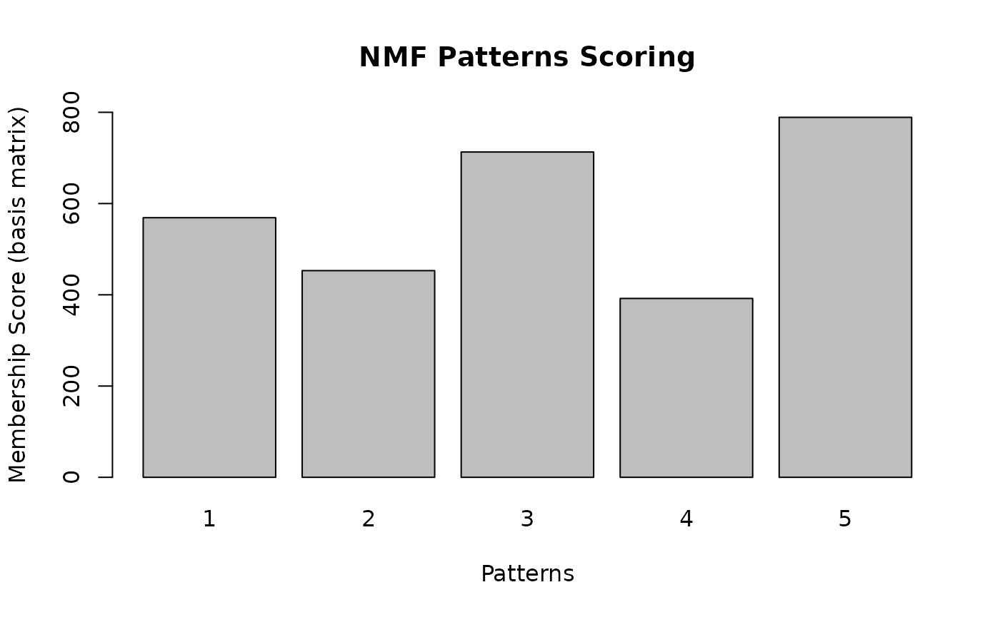

Analysis of Nanopore HEK293 with JACUSA2helper
Christoph Dieterich, Michael Piechotta
2022-02-21
Source:vignettes/web_only/JACUSA2helper-nanopore.Rmd
JACUSA2helper-nanopore.RmdIn the following, the workflow for use case 3 from (Piechotta20221?) is presented. Data for use cases 1-3 can be downloaded to repeat the analysis.
Non-negative Matrix Factorization
Here, we briefly introduce Non-negative Matrix Factorization (NMF). This section uses the notation from NMF vignette.
Non-negative Matrix Factorization tries to find an approximation of: \[X \approx W H\], where * \(X\) is a non-negative \(n \times p\) matrix, * \(W\) is a non-negative \(n \times r\) matrix (basis matrix), and * \(H\) is a non-negative \(r \times p\) matrix (coefficient matrix).
\(r\) is called the factorization rank.
Check NMF vignette for details on optimization and algorithms.
In the following, we will explain how to convert JACUSA2 output to an appropriate matrix \(X\) and perform NMF.
General workflow
Use read_result to read JACUSA2 output and filter the data set.
To repeat the Nanopore analysis from Piechotta et al. (2021), download the following data: * WT100 vs. WT0. * WT vs. KO and
Depending on your bandwidth the Download might take some time. Make sure, you have approx. 20GB of main memory available.
Pre-processing
At the beginning we organize the data:
# files to read
files <- c(
"/storage/zenodo/use_case3/WT_vs_KO_call2_result.out.gz",
"/storage/zenodo/use_case3/WT100_vs_WT0_call2_result.out.gz"
)
# descriptions corresponding to files
meta_conds = c(
"WT_vs_KO",
"WT100_vs_WT0"
)meta_conds is used as a concise description of each file to distinguish the JACUSA2 outputs.
The pre-processing workflow for one file can be summarized into the following steps:
- Read
- Read JACUSA2 output.
- Filter
- Employ coverage and other filters to remove not interesting sites.
- Add meta condition
- Add concise description of each file.
- Unpack and add info
- Unpack specific info data and add.
- Reduce
- Select relevant data column.
We explain the pre-processing workflow for one file and generalize to arbitrary number of files (here two).
Read
The underlying function of read_result is data.table::fread - check the respective help page for details on additional options. Depending on your machine increase nThreads to use more threads to parse a file.
i <- 1 # WT_vs_KO
print(files[i])
#> [1] "/storage/zenodo/use_case3/WT_vs_KO_call2_result.out.gz"
print(meta_conds[i])
#> [1] "WT_vs_KO"
wt_vs_ko_res <- read_result(files[i], nThread = 1)Filter
We use the following filters: * retain sites with “A” in the reference, * retain sites on chromosome 1-22, and X, and * remove sites that are within homopolymers (JACUSA2 filter flag: “Y”).
print(paste0("Sites BEFORE filtering: ", length(wt_vs_ko_res)))
#> [1] "Sites BEFORE filtering: 8891484"
wt_vs_ko_filtered <- wt_vs_ko_res %>% filter(
ref == "A",
seqnames %in% c(as.character(1:22), "X"),
! grepl("Y", filter, fixed = TRUE)
)
print(paste0("Sites AFTER filtering: ", length(wt_vs_ko_filtered)))
#> [1] "Sites AFTER filtering: 2015555"Add meta condition
We add a concise description of files to each result object.
wt_vs_ko_filtered$meta_cond <- factor(meta_conds[1], meta_conds)
table(wt_vs_ko_filtered$meta_cond)
#>
#> WT_vs_KO WT100_vs_WT0
#> 2015555 0WT100_vs_WT0 is zero because we haven’t added the respective file yet.
Add specific info
The “info” field contains meta information for sites, such as detailed INDEL statistics. To save memory, we manually unpack the “info” field and select the following keys: * “insertion_score” and * “deletion_score”. We will use these values during model training.
unpacked_info <- unpack_info(
wt_vs_ko_filtered$info,
cond_count = 2,
keys=c("insertion_score", "deletion_score")
)
# append specific info
mcols(wt_vs_ko_filtered) <- cbind(mcols(wt_vs_ko_filtered), unpacked_info)Reduce
We continue to reduce the data set by selecting only relevant columns and renaming “score” column to “call2_score” for consistency:
print(
paste0(
"Dimensions BEFORE reduction: ",
paste0(dim(mcols(wt_vs_ko_filtered)), collapse = ", ")
)
)
#> [1] "Dimensions BEFORE reduction: 2015555, 10"
mcols(wt_vs_ko_filtered) <- mcols(wt_vs_ko_filtered)[c("meta_cond", "score", "insertion_score", "deletion_score")]
colnames(mcols(wt_vs_ko_filtered))[colnames(mcols(wt_vs_ko_filtered)) == "score"] <- "call2_score"
print(
paste0(
"Dimensions AFTER reduction: ",
paste0(dim(mcols(wt_vs_ko_filtered)), collapse = ", ")
)
)
#> [1] "Dimensions AFTER reduction: 2015555, 4"This operation concludes the pre-processing workflow for one file.
Generalize
So far, we have shown a detailed description of pre-processing one file. In the following, we provide code for arbitrary number of results and meta conditions:
# pre-processing workflow for arbitrary number of files and meta conditions
results <- mapply(function(file, meta_cond) {
result <- read_result(file, nThread = 1) %>%
filter(
ref == "A",
! grepl("Y", filter, fixed = TRUE),
seqnames %in% c(as.character(1:22), "X")
)
# add file specific condition
result$meta_cond <- factor(meta_cond, meta_conds)
# unpack specific info
unpacked_info <- unpack_info(
result$info,
cond_count = 2,
keys=c("insertion_score", "deletion_score")
)
# add specific info
mcols(result) <- cbind(mcols(result), unpacked_info)
# select relevant data
mcols(result) <- mcols(result)[c("meta_cond", "score", "insertion_score", "deletion_score")]
colnames(mcols(result))[colnames(mcols(result)) == "score"] <- "call2_score"
return(result)
}, files, meta_conds, SIMPLIFY = FALSE, USE.NAMES = FALSE)
# convert and concatenate GenomicRanges
results <- unlist(GRangesList(results))
# filtered sites per file / meta condition
table(results$meta_cond)
#>
#> WT_vs_KO WT100_vs_WT0
#> 2015555 2544255results now consists of locations and scores for sites from all files and meta_conds.
# add unique ID for a site: contig:start-end:strand
results$id <- JACUSA2helper::id(results)
# venndiagram of sites shared betwen files
meta_cond_plt <- venn.diagram(
tapply(results$id, results$meta_cond, c),
filename = NULL,
lwd = 1,
cex = 0.5,
fontfamily = "sans",
cat.cex = 0.9,
cat.default.pos = "outer",
cat.fontfamily = "sans",
)
grid.newpage()
grid.draw(meta_cond_plt)
Calculating overlapping regions
We extend the coordinates of a site by 2nt in each direction:
unique_regions consists now of 5nt wide coordinates around all sites with the site (-NNANN-) positioned in the middle (= position 3). We calculate the position of each site in overlapping unique_regions:
# compute overlap
hits <- findOverlaps(results, unique_regions)
# corresponding overlap in ...
overlap_regions <- unique_regions[subjectHits(hits)]
# and ...
overlap_results <- results[queryHits(hits)]
# coordinates of overlapping region: contig:start-end:strand
# bin sites in unique_regions
overlap_results$region <- paste0(
seqnames(overlap_regions), ":",
start(overlap_regions), "-", end(overlap_regions), ":",
strand(overlap_regions)
)
# add site position within extended region
overlap_results$position <- start(overlap_results) - start(overlap_regions) + 1
barplot(
table(overlap_results$position),
xlab = "position of site within a motif\n(original site position is 3)",
ylab = "Number of sites with score(s)",
names.arg = c("1\n-N", "2\nN", "3\nA", "4\nN", "5\nN-")
)
Create data matrix
The pre-processing is almost done, the data frame should contain the following columns:
mcols(overlap_results)
#> DataFrame with 8458600 rows and 7 columns
#> meta_cond call2_score insertion_score deletion_score
#> <factor> <numeric> <numeric> <numeric>
#> 1 WT_vs_KO 0.182221 0.973777 -0.00084858
#> 2 WT_vs_KO 0.200339 NA 0.84031855
#> 3 WT_vs_KO 0.200339 NA 0.84031855
#> 4 WT_vs_KO 0.279846 NA NA
#> 5 WT_vs_KO 0.279846 NA NA
#> ... ... ... ... ...
#> 8458596 WT100_vs_WT0 1.491192 0.68256511 0.915552
#> 8458597 WT100_vs_WT0 1.483870 0.68256511 NA
#> 8458598 WT100_vs_WT0 1.483870 0.68256511 NA
#> 8458599 WT100_vs_WT0 0.365169 0.04035042 NA
#> 8458600 WT100_vs_WT0 1.501021 -0.00393218 0.277957
#> id region position
#> <character> <character> <numeric>
#> 1 1:14411-14411:- 1:14409-14413:- 3
#> 2 1:14415-14415:- 1:14413-14417:- 3
#> 3 1:14415-14415:- 1:14414-14418:- 2
#> 4 1:14416-14416:- 1:14413-14417:- 4
#> 5 1:14416-14416:- 1:14414-14418:- 3
#> ... ... ... ...
#> 8458596 X:156025650-15602565.. X:156025649-15602565.. 2
#> 8458597 X:156025651-15602565.. X:156025648-15602565.. 4
#> 8458598 X:156025651-15602565.. X:156025649-15602565.. 3
#> 8458599 X:156025654-15602565.. X:156025652-15602565.. 3
#> 8458600 X:156025659-15602565.. X:156025657-15602566.. 3Use tidyr::pivot_wider to create a data matrix:
data_matrix <- mcols(overlap_results) %>%
as.data.frame() %>%
tidyr::pivot_wider(
id_cols = region,
names_from = c(meta_cond, position),
values_from = c(call2_score, insertion_score, deletion_score),
names_glue = "{meta_cond}_{.value}_{position}",
names_sort = TRUE,
values_fill = 0.0
)
# set sensible defaults
data_matrix[is.na(data_matrix)] <- 0
data_matrix[data_matrix < 0] <- 0
colnames(data_matrix)
#> [1] "region" "WT_vs_KO_call2_score_1"
#> [3] "WT_vs_KO_call2_score_2" "WT_vs_KO_call2_score_3"
#> [5] "WT_vs_KO_call2_score_4" "WT_vs_KO_call2_score_5"
#> [7] "WT100_vs_WT0_call2_score_1" "WT100_vs_WT0_call2_score_2"
#> [9] "WT100_vs_WT0_call2_score_3" "WT100_vs_WT0_call2_score_4"
#> [11] "WT100_vs_WT0_call2_score_5" "WT_vs_KO_insertion_score_1"
#> [13] "WT_vs_KO_insertion_score_2" "WT_vs_KO_insertion_score_3"
#> [15] "WT_vs_KO_insertion_score_4" "WT_vs_KO_insertion_score_5"
#> [17] "WT100_vs_WT0_insertion_score_1" "WT100_vs_WT0_insertion_score_2"
#> [19] "WT100_vs_WT0_insertion_score_3" "WT100_vs_WT0_insertion_score_4"
#> [21] "WT100_vs_WT0_insertion_score_5" "WT_vs_KO_deletion_score_1"
#> [23] "WT_vs_KO_deletion_score_2" "WT_vs_KO_deletion_score_3"
#> [25] "WT_vs_KO_deletion_score_4" "WT_vs_KO_deletion_score_5"
#> [27] "WT100_vs_WT0_deletion_score_1" "WT100_vs_WT0_deletion_score_2"
#> [29] "WT100_vs_WT0_deletion_score_3" "WT100_vs_WT0_deletion_score_4"
#> [31] "WT100_vs_WT0_deletion_score_5"The columns of the data matrix correspond to scores for each meta condition and corresponding position in the motif, e.g. “WT_vs_KO_call2_score_4”: WT_vs_KO : Meta condition. call2_score : score that indicates if base composition between condition is different. 4 : Position within motif
We will continue adding meta information to the data matrix.
Add sequence
In order to add information if a site is contained in a DRACH motif, we need to retrieve sequence information for the overlapping unique_regions of a site.
If you have a custom FASTA sequence, use Rsamtools::FaFile to load the FASTA file. Otherwise, load a genome from via BSgenome.
library("BSgenome.Hsapiens.NCBI.GRCh38")
# retrieve sequence and convert to character vector
data_matrix$motif <- getSeq(BSgenome.Hsapiens.NCBI.GRCh38, GRanges(data_matrix$region)) %>%
as.character() %>% unname()
# number of top 10 motifs
sort(table(data_matrix$motif), decreasing = TRUE)[1:10]
#>
#> CCAGC GCAGC CCAGG CCACC AGAAG GGAGG GCAGG TGAAG CCAAG GGAAG
#> 38599 37070 30079 29300 28150 27785 27177 25850 25499 24483Next, we add an indicator variable if the DRACH motif ([AGT][AG]AC[ACT]) is present:
data_matrix$DRACH <- 0
data_matrix$DRACH[grep("[AGT][AG]AC[ACT]", data_matrix$motif)] <- 1
tbl <- table(data_matrix$DRACH)
names(tbl) <- recode(names(tbl), "0" = "no", "1" = "yes") %>%
paste0(
" (",
paste0(
scales::label_comma()(as.vector(tbl)),
"; ",
scales::percent_format()(as.vector(tbl / sum(tbl)))
),
")"
)
# plot distribution of DRACH motifs
pie(tbl, main="DRACH motif present")
Use saveRDS(data_matrix, file = "data_matrix") to store the current state. Use data_matrix <- readRDS("data_matrix") to restore previous state.
Use NMF on Nanopore data
Overlap with miCLIP data
Next, we need miCLIP data to extract m6A sites from the data matrix: * Boulias, * Koertel, and * Koh. We use sites that are present in all three data sets.
The column “region” corresponds to the extended sites around identified miCLIP sites. Make sure that “region” is 1-indexed if you use your own annotation.
head(miclip)
#> contig start end overlap score strand region
#> 1 1 1000217 1000222 Boulias 0 - 1:1000218-1000222:-
#> 2 1 1000221 1000226 Koertel,Koh 0 - 1:1000222-1000226:-
#> 3 1 100022414 100022419 Boulias 0 + 1:100022415-100022419:+
#> 4 1 100022490 100022495 Boulias 0 + 1:100022491-100022495:+
#> 5 1 1000246 1000251 Koh 0 - 1:1000247-1000251:-
#> 6 1 1000520 1000525 Koertel 0 - 1:1000521-1000525:-
# plot venn diagram of shared CLIP sites
miclip_plt <- tidyr::separate_rows(miclip[c("overlap", "region")], overlap) %>%
with(tapply(region, overlap, list)) %>%
venn.diagram(
filename = NULL,
lwd = 1,
cex = 0.5,
fontfamily = "sans",
cat.cex = 0.9,
cat.default.pos = "outer",
cat.fontfamily = "sans",
)
grid.newpage()
grid.draw(miclip_plt)
Intersect regions and create feature matrix (corresponds to \(X\) in \(N \approx W H\)) of sites that are contained in all three data sets: Boulias, Koertel, and Koh. NMF requires the matrix to consist only of numeric and non-negative values:
# retain sites that overlap with miCLIP and remove non-numeric columns
feature_matrix <- data_matrix[data_matrix$region %in% miclip[miclip$overlap == "Boulias,Koertel,Koh", "region"], ] %>%
as.data.frame()
rownames(feature_matrix) <- feature_matrix$region
# remove non-numeric columns
feature_matrix <- select(feature_matrix, -region, -motif, -DRACH)
head(feature_matrix)
#> WT_vs_KO_call2_score_1 WT_vs_KO_call2_score_2
#> 1:924692-924696:+ 0 0
#> 1:942769-942773:+ 0 0
#> 1:1217108-1217112:- 0 0
#> 1:1217452-1217456:- 0 0
#> 1:1232629-1232633:+ 0 0
#> 1:1233130-1233134:+ 0 0
#> WT_vs_KO_call2_score_3 WT_vs_KO_call2_score_4
#> 1:924692-924696:+ 4.4050409 0.000000
#> 1:942769-942773:+ 2.8667036 0.000000
#> 1:1217108-1217112:- 1.4836637 1.198658
#> 1:1217452-1217456:- 0.8283465 0.000000
#> 1:1232629-1232633:+ 6.9350419 0.000000
#> 1:1233130-1233134:+ 14.9762378 0.000000
#> WT_vs_KO_call2_score_5 WT100_vs_WT0_call2_score_1
#> 1:924692-924696:+ 0.0000000 0
#> 1:942769-942773:+ 0.0000000 0
#> 1:1217108-1217112:- 0.1701674 0
#> 1:1217452-1217456:- 0.0000000 0
#> 1:1232629-1232633:+ 0.0000000 0
#> 1:1233130-1233134:+ 6.8826910 0
#> WT100_vs_WT0_call2_score_2 WT100_vs_WT0_call2_score_3
#> 1:924692-924696:+ 0 6.097167
#> 1:942769-942773:+ 0 0.698221
#> 1:1217108-1217112:- 0 1.596011
#> 1:1217452-1217456:- 0 2.713407
#> 1:1232629-1232633:+ 0 5.644694
#> 1:1233130-1233134:+ 0 15.168060
#> WT100_vs_WT0_call2_score_4 WT100_vs_WT0_call2_score_5
#> 1:924692-924696:+ 0.0000000 0.0000000
#> 1:942769-942773:+ 0.0000000 0.0000000
#> 1:1217108-1217112:- 0.6437811 0.7983573
#> 1:1217452-1217456:- 0.0000000 0.0000000
#> 1:1232629-1232633:+ 0.0000000 0.0000000
#> 1:1233130-1233134:+ 0.0000000 5.0895374
#> WT_vs_KO_insertion_score_1 WT_vs_KO_insertion_score_2
#> 1:924692-924696:+ 0 0
#> 1:942769-942773:+ 0 0
#> 1:1217108-1217112:- 0 0
#> 1:1217452-1217456:- 0 0
#> 1:1232629-1232633:+ 0 0
#> 1:1233130-1233134:+ 0 0
#> WT_vs_KO_insertion_score_3 WT_vs_KO_insertion_score_4
#> 1:924692-924696:+ 1.9089064 0.000000
#> 1:942769-942773:+ 3.0406167 0.000000
#> 1:1217108-1217112:- 0.0000000 5.911752
#> 1:1217452-1217456:- 0.2143132 0.000000
#> 1:1232629-1232633:+ 2.1975648 0.000000
#> 1:1233130-1233134:+ 2.8541825 0.000000
#> WT_vs_KO_insertion_score_5 WT100_vs_WT0_insertion_score_1
#> 1:924692-924696:+ 0.00000000 0
#> 1:942769-942773:+ 0.00000000 0
#> 1:1217108-1217112:- 4.26186947 0
#> 1:1217452-1217456:- 0.00000000 0
#> 1:1232629-1232633:+ 0.00000000 0
#> 1:1233130-1233134:+ 0.04828947 0
#> WT100_vs_WT0_insertion_score_2
#> 1:924692-924696:+ 0
#> 1:942769-942773:+ 0
#> 1:1217108-1217112:- 0
#> 1:1217452-1217456:- 0
#> 1:1232629-1232633:+ 0
#> 1:1233130-1233134:+ 0
#> WT100_vs_WT0_insertion_score_3
#> 1:924692-924696:+ 0.91035782
#> 1:942769-942773:+ 0.06050655
#> 1:1217108-1217112:- 3.66811234
#> 1:1217452-1217456:- 1.81792363
#> 1:1232629-1232633:+ 9.92893506
#> 1:1233130-1233134:+ 8.96038738
#> WT100_vs_WT0_insertion_score_4
#> 1:924692-924696:+ 0.000000
#> 1:942769-942773:+ 0.000000
#> 1:1217108-1217112:- 3.657584
#> 1:1217452-1217456:- 0.000000
#> 1:1232629-1232633:+ 0.000000
#> 1:1233130-1233134:+ 0.000000
#> WT100_vs_WT0_insertion_score_5 WT_vs_KO_deletion_score_1
#> 1:924692-924696:+ 0.0000000 0
#> 1:942769-942773:+ 0.0000000 0
#> 1:1217108-1217112:- 0.0000000 0
#> 1:1217452-1217456:- 0.0000000 0
#> 1:1232629-1232633:+ 0.0000000 0
#> 1:1233130-1233134:+ 0.0233918 0
#> WT_vs_KO_deletion_score_2 WT_vs_KO_deletion_score_3
#> 1:924692-924696:+ 0 6.2617313
#> 1:942769-942773:+ 0 11.1610092
#> 1:1217108-1217112:- 0 6.7715961
#> 1:1217452-1217456:- 0 0.5243894
#> 1:1232629-1232633:+ 0 2.1037304
#> 1:1233130-1233134:+ 0 1.4370143
#> WT_vs_KO_deletion_score_4 WT_vs_KO_deletion_score_5
#> 1:924692-924696:+ 0.000000 0.0000000
#> 1:942769-942773:+ 0.000000 0.0000000
#> 1:1217108-1217112:- 4.966816 0.2502575
#> 1:1217452-1217456:- 0.000000 0.0000000
#> 1:1232629-1232633:+ 0.000000 0.0000000
#> 1:1233130-1233134:+ 0.000000 4.4948213
#> WT100_vs_WT0_deletion_score_1 WT100_vs_WT0_deletion_score_2
#> 1:924692-924696:+ 0 0
#> 1:942769-942773:+ 0 0
#> 1:1217108-1217112:- 0 0
#> 1:1217452-1217456:- 0 0
#> 1:1232629-1232633:+ 0 0
#> 1:1233130-1233134:+ 0 0
#> WT100_vs_WT0_deletion_score_3 WT100_vs_WT0_deletion_score_4
#> 1:924692-924696:+ 5.3259626 0.00000
#> 1:942769-942773:+ 9.0640142 0.00000
#> 1:1217108-1217112:- 14.5902283 2.56059
#> 1:1217452-1217456:- 0.0127461 0.00000
#> 1:1232629-1232633:+ 4.5645675 0.00000
#> 1:1233130-1233134:+ 9.5525401 0.00000
#> WT100_vs_WT0_deletion_score_5
#> 1:924692-924696:+ 0.000000000
#> 1:942769-942773:+ 0.000000000
#> 1:1217108-1217112:- 0.007306643
#> 1:1217452-1217456:- 0.000000000
#> 1:1232629-1232633:+ 0.000000000
#> 1:1233130-1233134:+ 1.400090523Compute factorizaion rank(s)
An important parameter in NMF is the factorization rank \(r\) that defines the number of features to approximate \(X\) - a similar parameter like the number of clusters in the k-means algorithm. We will compute multiple factorizations with different values for \(r\) and use a surrogate measure to find an appropriate value.
Make sure that the feature matrix (\(X\)) contains only numeric values before you start the factorization of \(X\) to \(W H\). Check NMF vignette for details on parameters. For example argument .opt=pv3 insructs to use for 3 cores - adjust the number according to your machine.
Here, we will compute factorizations for \(r \in {2, ..., 10}\):
library(NMF)
nmfSeed('nndsvd')
#> <object of class: NMFSeed >
#> name: nndsvd
#> method: <function>
estim.r <- nmf(feature_matrix, rank = 2:10, nrun = 10, seed = 123456, .opt = 'vp3')
#> Compute NMF rank= 2 ... + measures ... OK
#> Compute NMF rank= 3 ... + measures ... OK
#> Compute NMF rank= 4 ... + measures ... OK
#> Compute NMF rank= 5 ... + measures ... OK
#> Compute NMF rank= 6 ... + measures ... OK
#> Compute NMF rank= 7 ... + measures ... OK
#> Compute NMF rank= 8 ... + measures ... OK
#> Compute NMF rank= 9 ... + measures ... OK
#> Compute NMF rank= 10 ... + measures ... OKVisualize estimation of the ranks
In the following, we will compare the results for different \(r\) on our original and randomized data (use default NMF algorithm):
# randomize original data
V.random <- randomize(feature_matrix)
# calculate factorization on randomized data
estim.r.random <- nmf(V.random, rank = 2:10, nrun=10, seed = 123456, .opt='vp3')
#> Compute NMF rank= 2 ... + measures ... OK
#> Compute NMF rank= 3 ... + measures ... OK
#> Compute NMF rank= 4 ... + measures ... OK
#> Compute NMF rank= 5 ... + measures ... OK
#> Compute NMF rank= 6 ... + measures ... OK
#> Compute NMF rank= 7 ... + measures ... OK
#> Compute NMF rank= 8 ... + measures ... OK
#> Compute NMF rank= 9 ... + measures ... OK
#> Compute NMF rank= 10 ... + measures ... OK
# compare factorization on original and randomized data
plot(estim.r, estim.r.random)
Choose factorization rank
DeltaSil <- estim.r$measures$silhouette.consensus - estim.r.random$measures$silhouette.consensus
DeltaCoph <- estim.r$measures$cophenetic - estim.r.random$measures$cophenetic
# how can we select factorization rank ?
ChoseRank <- min(
which(DeltaSil == max(DeltaSil)) + 1,
which(DeltaCoph == max(DeltaCoph)) + 1
)Plot distribution of surrogate scores to select an appropriate factorization range \(r\).
val_matrix <- matrix(0, nrow = length(DeltaCoph), ncol = 2)
val_matrix[, 1] <- DeltaSil
val_matrix[, 2] <- DeltaCoph
barplot(
t(val_matrix),
names.arg = 2:(length(DeltaCoph) + 1),
beside = TRUE,
col = c("#009E73", "#D55E00"),
legend.text = c("Silhouette", "Cophenetic"),
ylim = range(
pretty(c(0, DeltaSil))),
xlab = "Rank",
ylab = "Delta",
main = "Difference between original and randomized data",
cex.names=2,
cex.axis=2
)
abline(h = c(max(DeltaSil), max(DeltaCoph)), col = c("#009E73", "#D55E00"))
Compute factorization with chosen rank.
nmf_matrix <- nmf(feature_matrix, ChoseRank, nrun=10, seed=123456, .opt='vp3')
#>
Runs: |
Runs: | | 0%
Runs: |
Runs: |==================================================| 100%
#> System time:
#> user system elapsed
#> 34.089 5.429 24.002Use saveRDS(nmf_matrix, file="nmf_matrix") to store final result.
Visualize patterns
w <- basis(nmf_matrix)
# Table of number of best hits for each pattern"
pattern_instances <- apply(w, 1, function(x) {
which(x == max(x))
}
)
pattern_instance_tbl <- table(pattern_instances)
barplot(
height = pattern_instance_tbl,
names = 1:ncol(w),
main = "NMF Patterns Scoring",
xlab = "Patterns",
ylab = "Membership Score (basis matrix)",
ylim = range(pretty(c(0, pattern_instance_tbl)))
)
Next, we visualize the sequence logos that correspond to calculated patterns in NMF.
h <- coef(nmf_matrix)
sequences <- lapply(1:nrow(h), function(k) {
region_index <- data_matrix$region %in% names(which(pattern_instances == k))
return(data_matrix[region_index, "motif"]$motif)
})
names(sequences) <- paste0("Pattern ", 1:nrow(h))
ggseqlogo::ggseqlogo(sequences)
Finally, we plot profiles for each pattern and experiment (meta condition):
as.data.frame(h) %>%
mutate(pattern = 1:nrow(.)) %>%
tidyr::pivot_longer(
-pattern,
names_to = c("Exp", "Score", "Pos"),
names_pattern = "(WT_vs_KO|WT100_vs_WT0)_(call2_score|deletion_score|insertion_score)_([1-5]+)") %>%
mutate(score = gsub("_score$", "", Score)) %>%
ggplot(aes(x = Pos, y = value, fill = Score)) +
geom_bar(stat = "identity") +
xlab("Position in motif\n-NN A NN-") +
ylab("") +
facet_grid(Exp ~ pattern, labeller = label_both)
Prediction
We evaluate the factorization on miCLIP data from 3 experiments.
score_matrix <- select(data_matrix, starts_with("WT_")) %>%
as.matrix()
score_matrix <- score_matrix %*% t(h)[colnames(score_matrix), ]
colnames(score_matrix) <- paste0("NMF", 1:nrow(h))
score_matrix <- cbind(score_matrix, data_matrix[, c("region", "motif", "DRACH")])
rownames(score_matrix) <- score_matrix$regionEvaluation
# combine score and miCLIP data
data <- merge(score_matrix, miclip[, c("region", "overlap")], by = "region", sort = TRUE)
data$clip <- if_else(data$overlap == "Boulias,Koertel,Koh", "CLIP", "No Clip")
table(data$clip)
#>
#> CLIP No Clip
#> 3190 32572Empirical distribution
Plot empirical distribution of scores for each pattern
tidyr::gather(data, feature, score, starts_with("NMF")) %>%
ggplot(aes(x = score, color = clip)) +
stat_ecdf() +
theme_bw() +
ylab("") +
scale_color_discrete(name = "") +
theme(
axis.title.x = element_text(size = rel(2)),
axis.title.y = element_text(size = rel(2)),
axis.text = element_text(size = rel(1.5))
) +
facet_wrap(~ feature)
Plot positive predictive value
roc_values <- lapply(select(data, starts_with("NMF")), function(x) {
roc(data$clip, x)
}
) %>%
lapply(function(x) {
coordinates <- coords(x, x = "all", input = "threshold", ret = c("threshold", "ppv", "tpr", "tp", "tn", "fp", "fn"))
coordinates$sum <- log2(coordinates$tp + coordinates$fp)
coordinates$ppv <- coordinates$ppv * 20
return(coordinates)
}
) %>%
dplyr::bind_rows(.id = "feature")
# plot
ggplot(roc_values, aes(x = threshold)) +
geom_line(aes(y = sum), size = 2, color = "#009E73") +
geom_line(aes(y = ppv), size = 2, color = "#D55E00") +
scale_y_continuous(# Features of the first axis
name = "Log2(#predictions)",
# Add a second axis and specify its features
sec.axis = sec_axis( ~ . * 5, name = "Positive Predictive Value")
) +
scale_x_continuous(name = "Cutoff") +
theme_bw() +
theme(
axis.title.x = element_text(size = rel(2)),
axis.title.y = element_text(color = "#009E73", size = rel(2)),
axis.title.y.right = element_text(color = "#D55E00", size = rel(0.9)),
axis.text = element_text(size = rel(1.5))
) +
facet_wrap(~ feature)